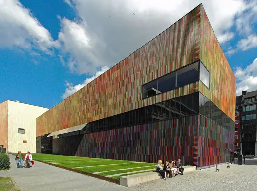

Buildings 651
Sort
 Guggenheim Bilbao1997 · Bilbao
Guggenheim Bilbao1997 · Bilbao Tate Modern2000 · London
Tate Modern2000 · London Teshima Art Museum2010 · Teshima
Teshima Art Museum2010 · Teshima Aga Khan Museum2014 · Toronto
Aga Khan Museum2014 · Toronto Museum of Islamic Art2008 · Doha
Museum of Islamic Art2008 · Doha Eli and Edythe Broad Art Museum2012 · East Lansing
Eli and Edythe Broad Art Museum2012 · East Lansing V&A Dundee2018 · Dundee
V&A Dundee2018 · Dundee Contemporary Jewish Museum2008 · San Francisco
Contemporary Jewish Museum2008 · San Francisco National Museum of Qatar2019 · Doha
National Museum of Qatar2019 · Doha Institute of Contemporary Art, Boston2006 · Boston
Institute of Contemporary Art, Boston2006 · Boston İstanbul Modern2023 · Istanbul
İstanbul Modern2023 · Istanbul Museum Folkwang2010 · Essen
Museum Folkwang2010 · Essen Solomon R. Guggenheim Museum1959 · New York
Solomon R. Guggenheim Museum1959 · New York MAXXI2010 · Rome
MAXXI2010 · Rome Acropolis Museum2009 · Athens
Acropolis Museum2009 · Athens 21st Century Museum of Contemporary Art, Kanazawa2004 · Kanazawa
21st Century Museum of Contemporary Art, Kanazawa2004 · Kanazawa Suzhou Museum2006 · Suzhou
Suzhou Museum2006 · Suzhou Getty Center1997 · Los Angeles
Getty Center1997 · Los Angeles Miho Museum1997 · Koka
Miho Museum1997 · Koka Danish Maritime Museum2013 · Helsingor
Danish Maritime Museum2013 · Helsingor National Gallery of Art, East Building1978 · Washington
National Gallery of Art, East Building1978 · Washington Fondazione Prada2015 · Milan
Fondazione Prada2015 · Milan Kolumba Museum2007 · Cologne
Kolumba Museum2007 · Cologne Bonnefanten Museum1995 · Maastricht
Bonnefanten Museum1995 · Maastricht Jewish Museum Berlin2001 · Berlin
Jewish Museum Berlin2001 · Berlin Kimbell Art Museum1972 · Fort Worth
Kimbell Art Museum1972 · Fort Worth Breuer Building1966 · New York
Breuer Building1966 · New York Neue Nationalgalerie1968 · Berlin
Neue Nationalgalerie1968 · Berlin Castelvecchio Museum1975 · Verona
Castelvecchio Museum1975 · Verona National Museum of Western Art1959 · Tokyo
National Museum of Western Art1959 · Tokyo Fondation Louis Vuitton2014 · Paris
Fondation Louis Vuitton2014 · Paris Niterói Contemporary Art Museum1996 · Niterói
Niterói Contemporary Art Museum1996 · Niterói Casa das Histórias Paula Rego2009 · Cascais
Casa das Histórias Paula Rego2009 · Cascais Milwaukee Art Museum, Quadracci Pavilion2001 · Milwaukee
Milwaukee Art Museum, Quadracci Pavilion2001 · Milwaukee Biomuseo2014 · Panama City
Biomuseo2014 · Panama City Modern Art Museum of Fort Worth2002 · Fort Worth
Modern Art Museum of Fort Worth2002 · Fort Worth Kunsthaus Bregenz1997 · Bregenz
Kunsthaus Bregenz1997 · Bregenz Hiroshima Peace Memorial Museum1955 · Hiroshima
Hiroshima Peace Memorial Museum1955 · Hiroshima Museum of Modern Art2004 · New York
Museum of Modern Art2004 · New York de Young Museum2005 · San Francisco
de Young Museum2005 · San Francisco Louvre Abu Dhabi2017 · Abu Dhabi
Louvre Abu Dhabi2017 · Abu Dhabi Vitra Design Museum1989 · Weil am Rhein
Vitra Design Museum1989 · Weil am Rhein Museum of Tomorrow2015 · Rio de Janeiro
Museum of Tomorrow2015 · Rio de Janeiro Kunsthal1992 · Rotterdam
Kunsthal1992 · Rotterdam
Museum Brandhorst2009 · Munich Zayed National Museum2025 · Abu Dhabi
Zayed National Museum2025 · Abu Dhabi Pinacoteca do Estado de São Paulo1998 · São Paulo
Pinacoteca do Estado de São Paulo1998 · São Paulo Museum of Modern Art, Rio de Janeiro1967 · Rio de Janeiro
Museum of Modern Art, Rio de Janeiro1967 · Rio de Janeiro